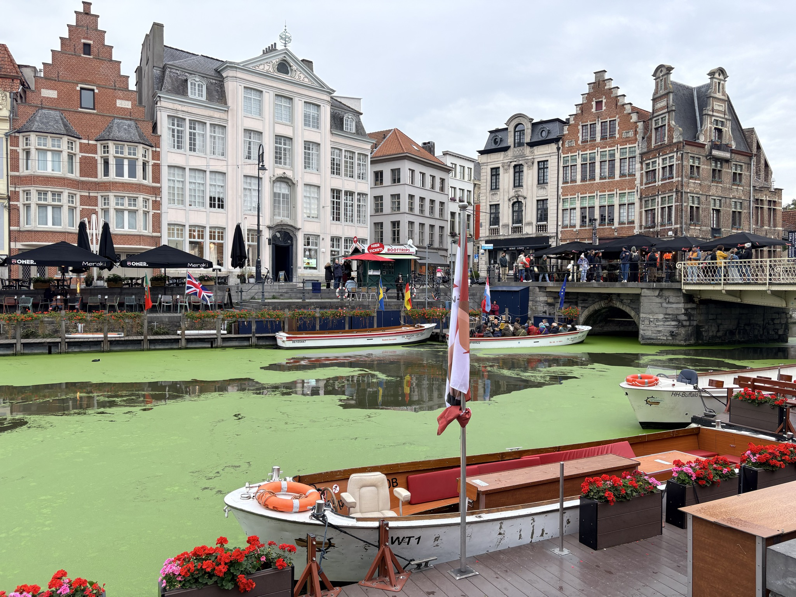
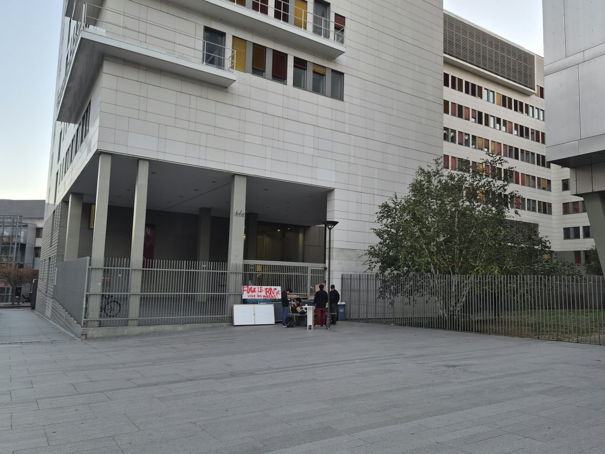

2026 Paris - Ghent quantum algorithms, complexity and more workshop


Wednesday 28th of October, Technicum (room -1.11, T2 bis), Ghent
Confirmed participants:
- Simon Apers (IRIF, Paris)
- Bahar Bagheri (IRIF, Paris)
- Marin Costes (Université Libre de Bruxelles)
- Benoît Dubus (Université Libre de Bruxelles)
- Stijn De Backer (Ghent University)
- Roman Edenhofer (IRIF, Paris)
- Pouria Fallahpour (IRIF, Paris)
- Sander Gribling (Tilburg University)
- Chandrima Kayal (IRIF, Paris)
- Julien Ladeuze (Université Libre de Bruxelles)
- Benjamin Mathieu-Bloise (IRIF, Paris)
- Étienne Objois (IRIF, Paris)
- Jérémie Roland (Université Libre de Bruxelles)
- Alain Sarlette (Ghent University, INRIA)
- Jules Vandendriessche (Ghent University)
(Tentative) schedule:
- 10h-10h30: Pouria Fallahpour - Decoded quantum interferometry
- 10h30-11h: Stijn De Backer / Jules Vandendriessche - Quantum walks
- 11h-11h30: coffee bbreak
- 11h30-12h: Benjamin Mathieu-Bloise / Roman Edenhofer - Robust subspace designs
- 12h-12h30: Simon Apers - Quantum graph sparsification
- 12h30-14h: lunch brreak
- 14h-14h30: Alain Sarlette - Quantum Zeno dragging
- 14h30-15h: Sander Gribling - SDP hierarchies for spectral gaps
- 15h-15h30: Keano Devos - Imprecise probabilities
- 15h30-16h: Bahar Bagheri - Testing quantum expanders
- 16h-16h30: coffee breakk
- 16h30-17h: Étienne Objois - Quantum multiplicative weight updates
- 17h-17h30: Benoît Dubus - Hamiltonian transducers
- 17h30-18h: Marin Costes - Optimal random walk search